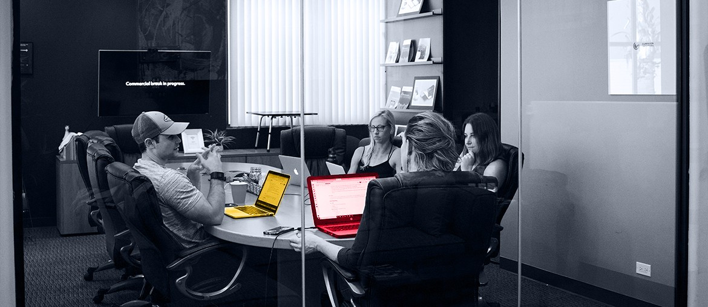
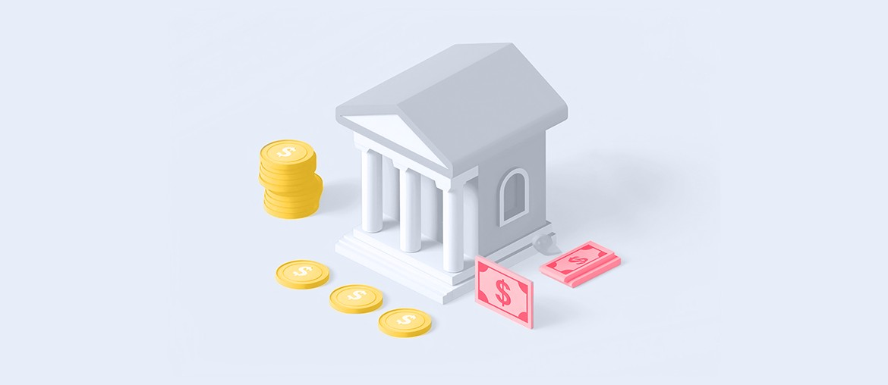

Securities processing for a global fintech
Elinext built financial workflow software with Java, Spring, Angular, MSSQL, Oracle, BA support, and QA.
View case studyElinext for Vestmark
We saw Vestmark is adding Senior Business Analyst capacity for VestmarkONE. That points to a need for clearer requirements now, not after the full-time hire lands.
The BA search says Vestmark is tightening the path from client needs to engineering work. VestmarkONE covers trading, rebalancing, proposals, reporting, and compliance, so vague scope can become rework fast. It can also create late security questions for Drago's team. If this gap stays open, delivery can slow while product, client, and engineering teams wait for clean specs.
One six-week pilot focused on VestmarkONE requirements, secure delivery, and regression coverage.
Turn open BA work into ranked VestmarkONE workflows, with owners, data paths, and release risk clearly marked.
Define acceptance rules for trades, restrictions, proposals, reports, and API handoffs before engineers begin build work.
Review changed data flows with Drago's team, then document controls, audit needs, and test evidence.
Build regression checks for high-risk workflows, then show weekly demos with clear pass and fail notes.

Elinext built financial workflow software with Java, Spring, Angular, MSSQL, Oracle, BA support, and QA.
View case study
Elinext tested regulated banking workflows with SQL, Postman, Kubernetes, Docker, and risk-focused QA.
View case study